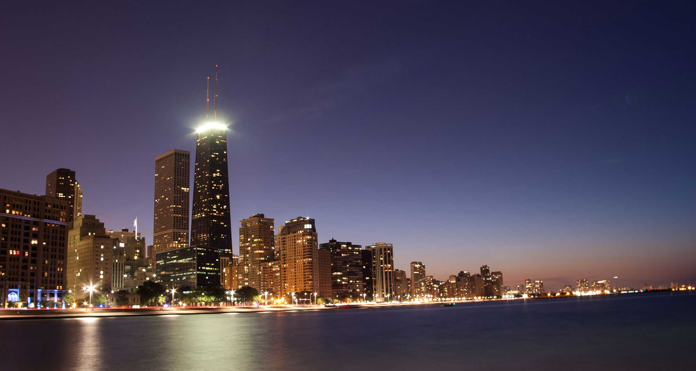
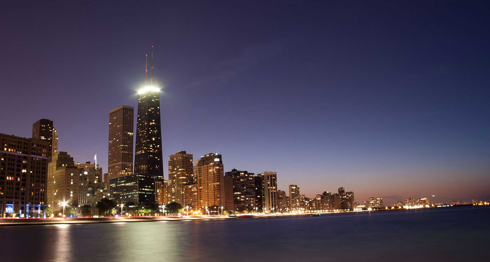

My Photo of the Month from October was a quick headshot for my co-worker Connor who completed his residency to become a Craftsman at 8th Light. I take all the bio photos for our website, so I am lucky enough to get everyone in front of my camera when they come on board. I love doing natural light portraits but they can be tricky in our office - which is a mix of fluorescent and incandescent bulbs combined with very tall windows that let natural sunlight pour in at certain points during the day.
Since these are small photos for our website I can't dedicate much time to them, the shoots are usually no more than a few minutes a piece. Connor was very comfortable in front of the camera which made things really easy. It was mid-morning so the light was coming in from the windows to camera left. I also lined him underneath a hanging light to create some highlighting from above which added a nice detail to the top of his head. We have a gorgeous chalk wall that Stephanie spent a lot of time on which, when blurred out creates a fun texture behind the subject. The arrow in the right of the frame adds a little cheekiness pointing back at Connor, business portraits don't always have to be straight laced. The mix of natural light and an incandescent bulb overhead makes for a little more editing to balance out the color temperature but overall I love the lighting.

My Canon 50mm 1.8 is my go-to lens for portraits since it is tack-sharp around 2.8 or 3.5. It allows me to shoot at a comfortable distance from the subject, but a bonus is that when I want to fill the frame I can take a few steps forward and say '..and now to make you a bit more uncomfortable' which usually always solicits a good smile and laugh. When getting your subject to laugh be sure to snap right after the initial 'burst', the best frames are just as the laugh is dying down to a good smile. I always try some serious shots and some basic posed smiling, but the best ones are always the candid laugh. Thanks for being a good sport Connor!